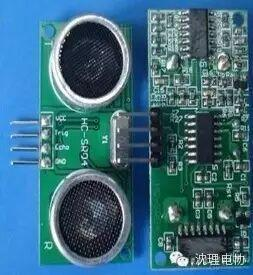
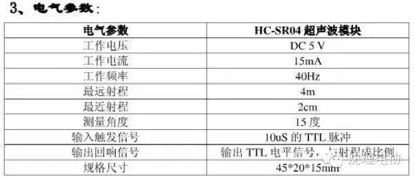
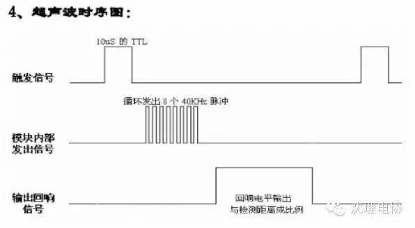

使用小程序
超声波测距模块有好多种类型，目前比较常用的有URM37超声波传感器默认是232接口，可以调为TTL接口,URM05大功率超声波传感器测试距离能到10米，算是目前来说测试距离比较远的一款了，另外还有比较常用的国外的几款SRF系列的超声波模块，目前的超声波模块精度能到1cm。
下面我们介绍一款HC-SR04模块：
１、此模块性能稳定，测度距离精确，模块高精度，盲区小。产品应用领域：机器人避障物体测距液位检测公共安防停车场检测。
2、主要技术参数：
1：使用电压：DC---5V
2：静态电流：小于2mA
3：电平输出：高5V
4：电平输出：底0V
5：感应角度：不大于15度
6：探测距离：2cm-450cm
7:高精度可达0.2cm

实物图
接线方式：VCC、trig（控制端）、 echo（接收端）、 GND
基本工作原理： (1)采用IO口TRIG触发测距，给至少10us的高电平信号; (2)模块自动发送8个40khz的方波，自动检测是否有信号返回； (3)有信号返回，通过IO口ECHO输出一个高电平，高电平持续的时间就是超声波从发射到返回的时间。测试距离=(高电平时间*声速(340M/S))/2; 本模块使用方法简单,一个控制口发一个10US以上的高电平,就可以在接收口等待高电平输出.一有输出就可以开定时器计时,当此口变为低电平时就可以读定时器的值,此时就为此次测距的时间,方可算出距离.如此不断的周期测,即可以达到你移动测量的值


5、操作：初始化时将trig和echo端口都置低，首先向给trig 发送至少10 us的高电平脉冲（模块自动向外发送8个40K的方波），然后等待，捕捉 echo 端输出上升沿，捕捉到上升沿的同时，打开定时器开始计时，再次等待捕捉echo的下降沿，当捕捉到下降沿，读出计时器的时间，这就是超声波在空气中运行的时间，按照测试距离=(高电平时间*声速(340M/S))/2 就可以算出超声波到障碍物的距离。
6、下面是飞思卡尔XS128单片机测距的程序：
while(1)
{
PT1AD0_PT1AD00 = 1;//给超声波模块输入高脉冲
PITINTE_PINTE1=1; //打开PIT1定时器
while(!(counter0>=4)); //等待20us
PITINTE_PINTE1=0;counter0 = 0;//关闭定时器，计数清零
PT1AD0_PT1AD00 = 0; //trig管脚拉低
PORTB_PB0 = 0; //指示灯0
while(!(PT1AD0_PT1AD01 == 1)); //等待echo输出上升沿
PORTB_PB1 = 0; //指示灯1
PITINTE_PINTE0=1; //打开PIT0定时器
while(!(PT1AD0_PT1AD01 == 0)); //等待下降沿
distance = counter*17/20; //计算距离，单位CM
PITINTE_PINTE0=0; //关闭定时器
PORTB_PB2 = 0; //指示灯2
PITINTE_PINTE0=1; //打开定时器定时500ms，数码管显示
while(!(counter>=10000))
{
Showing(distance); //显示距离，精确1cm
}
PITINTE_PINTE0=0;counter=0; //关闭定时器，清零
}
关注沈理电协（微信：sylgdzxh）
每一次转发和分享都是对我们的肯定。